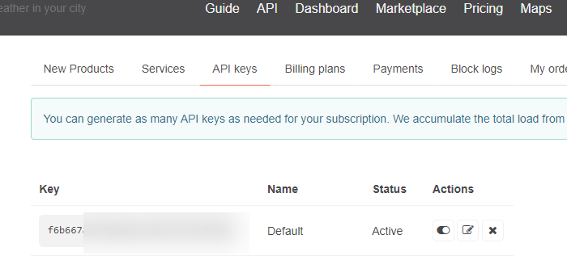

Table of Contents
1. What is an API?
The application programmer's interface (API) is a series of methods that are used for one application to communicate with another. This requires a well-structured method of communication that is predefined. APIs are generically any kind of method for two programs to speak to each other, but I'm going to focus on REST, or REpresentional State Transfer, which can handle most use cases and is commonly used. In REST, communication takes place through JSON1 which is already well-structured and robust to multiple different use cases. These JSON communications take place in plain text and are legible to the programmer, though if everything goes well you'll have minimal exposure to it.
REST generally uses HTTP to communicate, which is the same protocol that's used for general web browsing.
We're going to use OpenWeatherMap as an example of this. OpenWeatherMap is a free(ish) service which utilizes several of the features of APIs that we're going to want to make use of. As an added bonus, having basic weather data is useful in a broad set of circumstances.2 To follow along, go to http://www.openweathermap.com and create a free account.
2. Authentication
One downside to HTTP is that it doesn't play too nicely with authentication, which is a problem when we're transmitting data that we want to restrict to certain people, or if we don't want one person to monopolize the computing resources, or both. The way that this gets solved in REST is by using an API key which is a mess of characters that's unique to a user. On OpenWeatherMap, if you click on your name (top-right corner) you'll see a "My API Keys" option; click that and copy the API key. You can see mine below:

You'll note that I blurred part of the API key out, which leads me to the major downside: if an enterprising person sees your API key, they can pretend to be you. On OpenWeatherMap, this probably won't hurt you, but other cases can be problematic. If someone got, say, your OpenAI API key, they could run up a bunch of charges.
The way this gets handled is by limniting the access of specific API keys, often called scopes. So I could have an API key that can check my billing status on OpenAI, and then a separate one which allows it to run up charges. That way, if the billing status key gets compromised, it limits the harm.
Really, though, if an API key gets exposed, the best thing to do would be to reset it and get a new one. On OpenWeatherMap, you'd have to delete it and then get another one, but in other cases, you can refresh it without deleting it. You would need to update the API key wherever it's used in any case.
For now, let's copy the key that's displayed there and put it aside for now.
3. Basic API Usage
Since REST APIs use HTTP, we can use our web browser to interface with it in the most inefficient use of an API imaginable. The basic format is:
http://api.openweathermap.org/data/2.5/weather?q={CITY_NAME}&appid={YOUR_API_KEY}
Where {CITY_NAME} is the city, and {YOUR_API_KEY} is .. well, your API key. The curly braces should be deleted, but everything else should remain. So, if I had the API key abc123 and I wanted the weather in Boston, I'd use:
http://api.openweathermap.org/data/2.5/weather?q=Boston&appid=abc123
And then this is going to return a JSON object; in my case:
{
"coord": {
"lon": -71.0598,
"lat": 42.3584
},
"weather": [
{
"id": 801,
"main": "Clouds",
"description": "few clouds",
"icon": "02d"
}
],
"base": "stations",
"main": {
"temp": 277.6,
"feels_like": 273.43,
"temp_min": 276.05,
"temp_max": 279.06,
"pressure": 1011,
"humidity": 29
},
"visibility": 10000,
"wind": {
"speed": 5.81,
"deg": 352,
"gust": 10.73
},
"clouds": {
"all": 20
},
"dt": 1707160667,
"sys": {
"type": 2,
"id": 2013408,
"country": "US",
"sunrise": 1707134048,
"sunset": 1707170537
},
"timezone": -18000,
"id": 4930956,
"name": "Boston",
"cod": 200
}
Now, most of this is unintelligible. The important thing is the temp is 277.6 and the time is 17071606667. Now, because this is from one computer to another computer, it's worth noting that the temp is in Kelvin and the time is expressed in the Unix epoch, which is seconds since midnight on January 1st, 1970. But those are both the right answers!
Now, if I did this without the API key, I'd get something like this:
{
"cod": 401,
"message": "Invalid API key. Please see https://openweathermap.org/faq#error401 for more info."
}
Error codes are expressed as HTTP errors; you're probably familiar with 404 (resource not found; usually the URL is mistyped). Other common codes are 401 (not authorized; what we got above), 400 (the request wasn't formatted correctly), 403 (you're authenticated but not allowed to see that), and 408 (whatever was being done took too long). Any error code that doesn't start with a 4 is probably not your fault, but don't sell yourself short.
4. Getting this into PowerBI
So, we have our